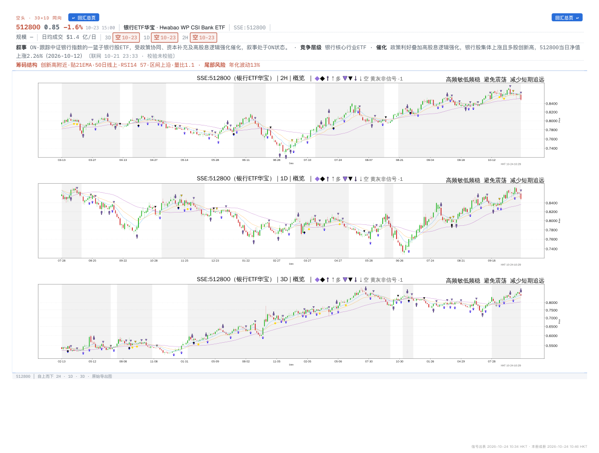
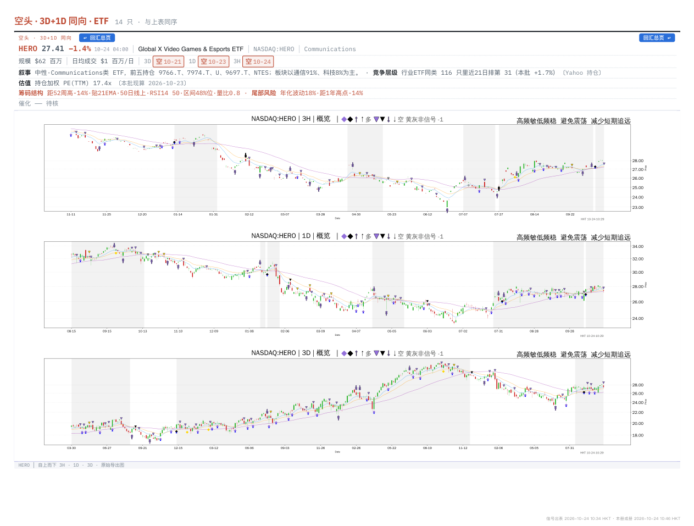
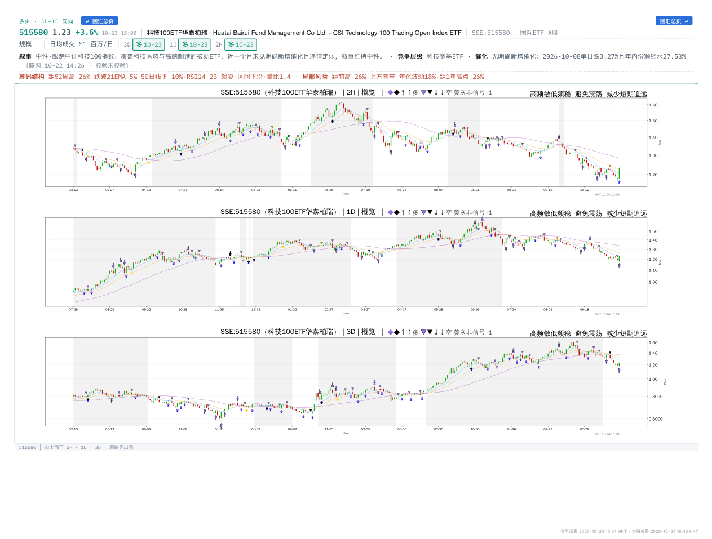
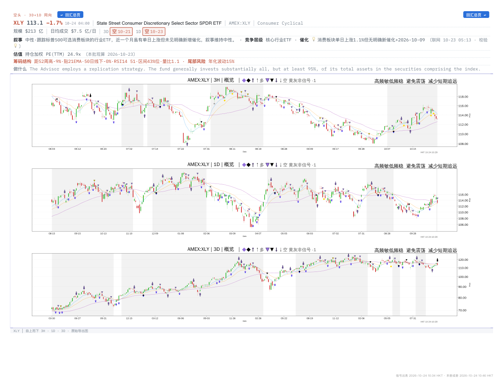
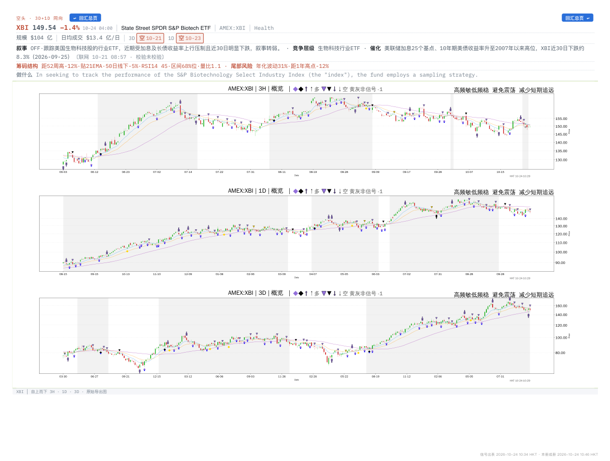
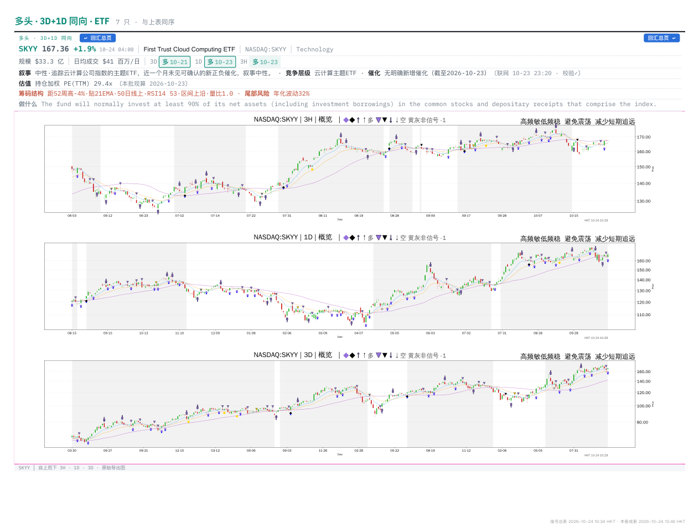
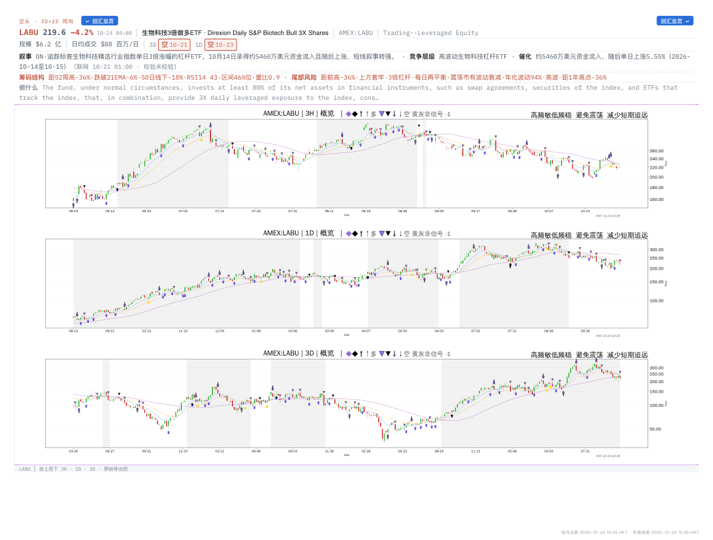
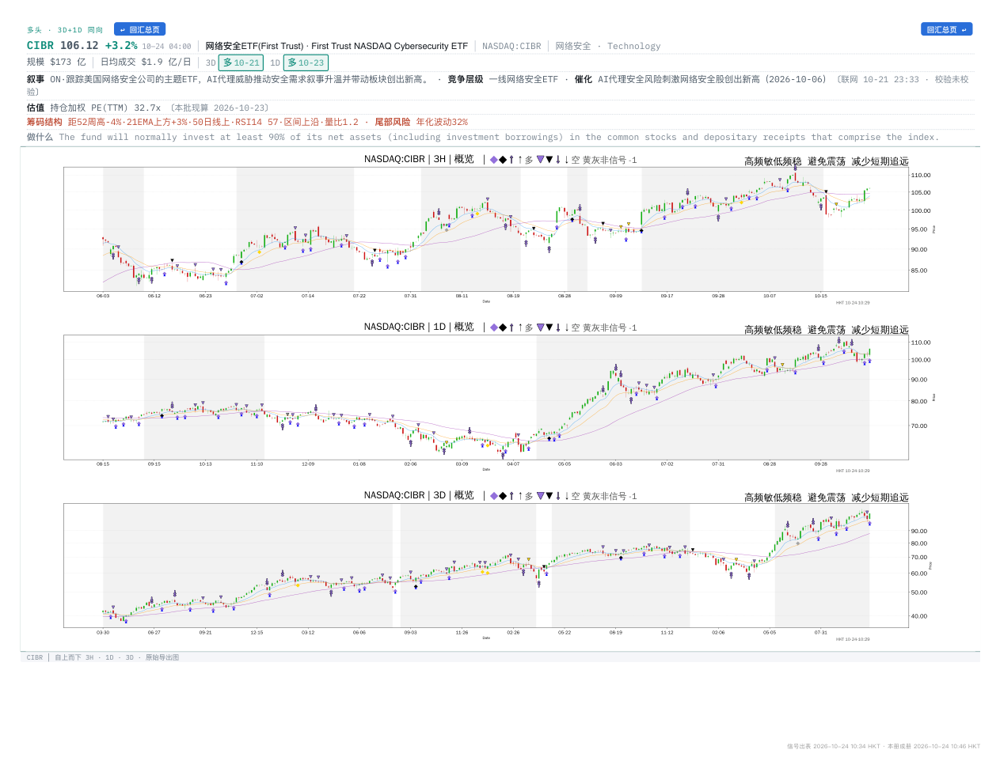
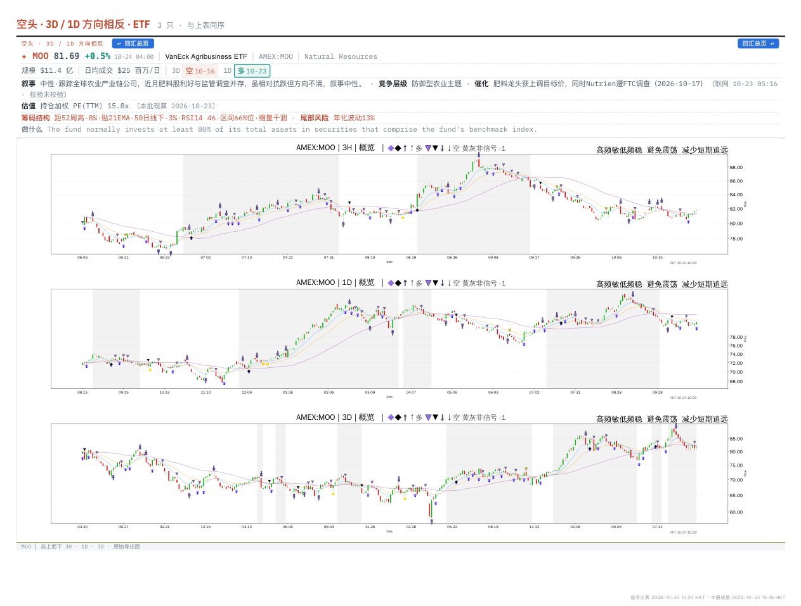
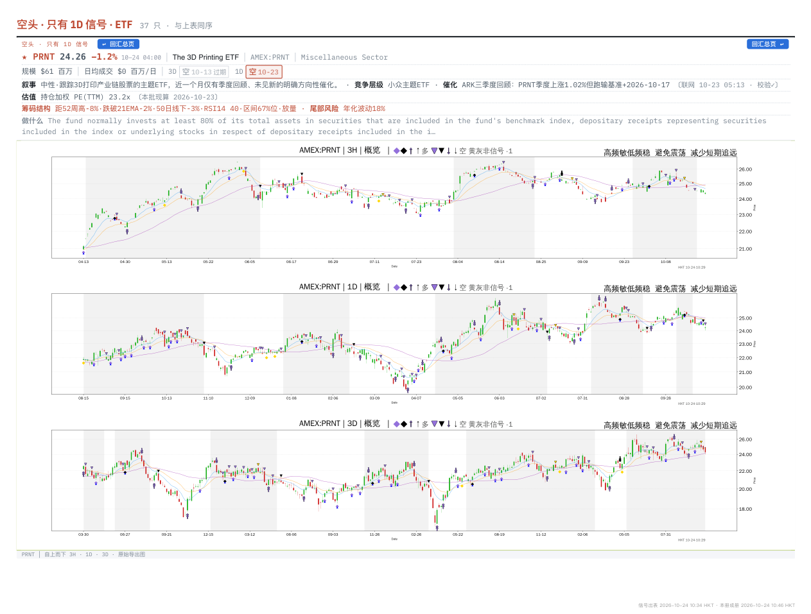
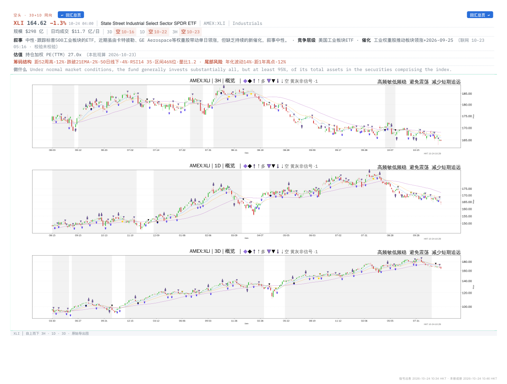
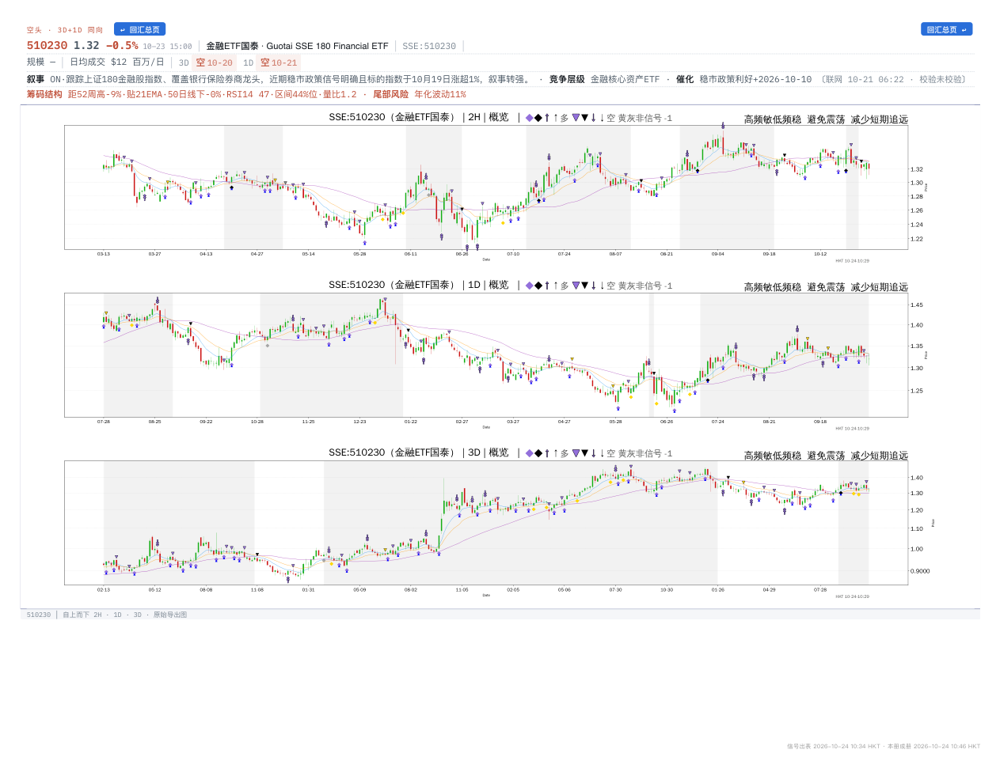
| 代码 | 名称 | 方向 | 周期 | 现价 | 日涨跌 | RS21 | RSI14 | 财报 | 出自 · 点开归档 |
|---|---|---|---|---|---|---|---|---|---|
| HERO | Global X Video | 空 | 3D 空 10-21 · 1D 空 10-23 · 3H 空 10-24 | 27.41 | -1.4% | RS +6.6 | RSI 50 | 1023 US All ETF 2229 nyt | |
| XLY | State Street C | 空 | 3D 空 10-21 · 1D 空 10-23 | 113.1 | -1.7% | RS +7.5 | RSI 51 | 1023 US All ETF 2229 nyt | |
| XBI | State Street S | 空 | 3D 空 10-21 · 1D 空 10-23 | 149.54 | -1.4% | RS +0.8 | RSI 45 | 1023 US All ETF 2229 nyt | |
| SKYY | First Trust Cl | 多 | 3D 多 10-21 · 1D 多 10-23 · 3H 多 10-23 | 167.36 | +1.9% | RS +5.2 | RSI 53 | 1023 US All ETF 2229 nyt | |
| LABU | Direxion Daily | 空 | 3D 空 10-21 · 1D 空 10-23 | 219.6 | -4.2% | RS -9.7 | RSI 43 | 1023 US All ETF 2229 nyt | |
| CIBR | 网络安全ETF(First | 多 | 3D 多 10-21 · 1D 多 10-23 | 106.12 | +3.2% | RS +7.8 | RSI 57 | 1023 US All ETF 2229 nyt | |
| MOO | VanEck Agribus | 多 | 3D 空 10-16 · 1D 多 10-23 | 81.69 | +0.5% | RS +3.0 | RSI 46 | 1023 US All ETF 2229 nyt | |
| PRNT | The 3D Printin | 空 | 3D 空 10-13 · 1D 空 10-23 | 24.26 | -1.2% | RS +2.4 | RSI 40 | 1023 US All ETF 2229 nyt | |
| XLI | State Street I | 空 | 3D 空 10-16 · 1D 空 10-22 · 3H 空 10-23 | 164.62 | -1.3% | RS +2.5 | RSI 35 | 1023 US All ETF 2229 nyt | |
| EWH | iShares MSCI H | 空 | 3D 空 10-16 · 1D 空 10-22 · 3H 空 10-23 | 21.73 | -0.3% | RS +1.7 | RSI 42 | 1023 US All ETF 2229 nyt | |
| ESPO | VanEck Video G | 空 | 3D 空 10-21 · 1D 空 10-22 | 99.09 | -1.5% | RS +6.9 | RSI 50 | 1023 US All ETF 2229 nyt | |
| SPY | State Street S | 空 | 3D 空 10-16 · 1D 空 10-22 | 759.97 | -0.5% | RS +4.0 | RSI 42 | 1023 US All ETF 2229 nyt | |
| MAGS | Roundhill Magn | 空 | 3D 空 10-21 · 1D 空 10-22 | 70.07 | -0.5% | RS +1.6 | RSI 41 | 1023 US All ETF 2229 nyt | |
| EWZ | 安硕MSCI巴西ETF（iS | 多 | 3D 多 10-16 · 1D 多 10-23 · 3H 多 10-23 | 42.59 | +1.8% | RS +20.3 | RSI 62 | 1023 US All ETF 2229 nyt | |
| GDXJ | VanEck Junior | 空 | 3D 空 10-16 · 1D 空 10-21 | 99.35 | -1.8% | RS -12.1 | RSI 32 | 1023 US All ETF 2229 nyt | |
| GDX | 黄金矿业ETF(VanEck | 空 | 3D 空 10-16 · 1D 空 10-21 | 80.2 | -1.8% | RS -8.2 | RSI 34 | 1023 US All ETF 2229 nyt | |
| GLD | SPDR Gold Shar | 空 | 3D 空 10-16 · 1D 空 10-22 | 366.61 | -0.7% | RS -1.5 | RSI 34 | 1023 US All ETF 2229 nyt | |
| BWET | Breakwave Tank | 多 | 3D 多 10-21 · 1D 多 10-22 | 896.61 | +0.1% | RS +36.0 | RSI 57 | 1023 US All ETF 2229 nyt | |
| DBC | Invesco DB Com | 多 | 3D 多 10-16 · 1D 多 10-23 | 34.1 | +1.6% | RS +7.7 | RSI 67 | 1023 US All ETF 2229 nyt | |
| HACK | Amplify Cybers | 多 | 3D 多 10-21 · 1D 多 10-21 | 127.83 | +4.2% | RS +9.6 | RSI 60 | 1023 US All ETF 2229 nyt |
| 代码 | 名称 | 方向 | 周期 | 现价 | 日涨跌 | RS21 | RSI14 | 财报 | 出自 · 点开归档 |
|---|---|---|---|---|---|---|---|---|---|
| 512800 | 银行ETF华宝 | 空 | 3D 空 10-23 · 1D 空 10-23 · 2H 空 10-23 | 0.85 | -1.6% | RS +7.8 | RSI 57 | 1023 US All ETF 2229 nyt | |
| 515580 | 科技100ETF华泰柏瑞 | 多 | 3D 多 10-23 · 1D 多 10-23 · 2H 多 10-23 | 1.23 | +3.6% | RS -6.0 | RSI 23 | 1023 US All ETF 2229 nyt | |
| 510230 | 金融ETF国泰 | 空 | 3D 空 10-20 · 1D 空 10-21 | 1.32 | -0.5% | RS +5.3 | RSI 47 | 1023 US All ETF 2229 nyt |